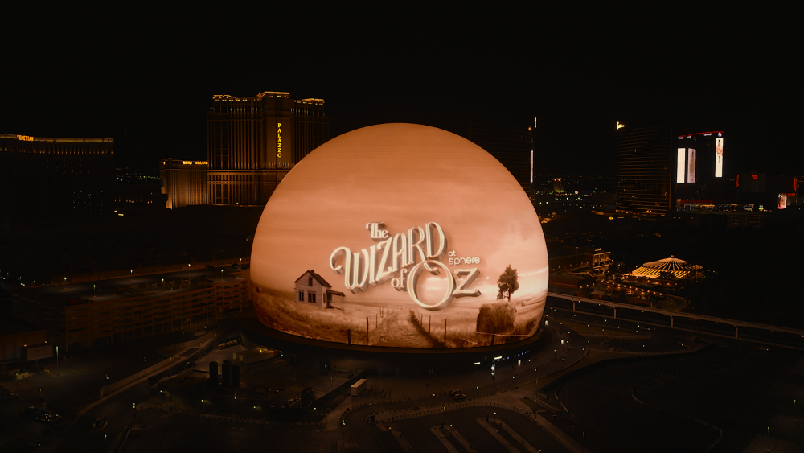
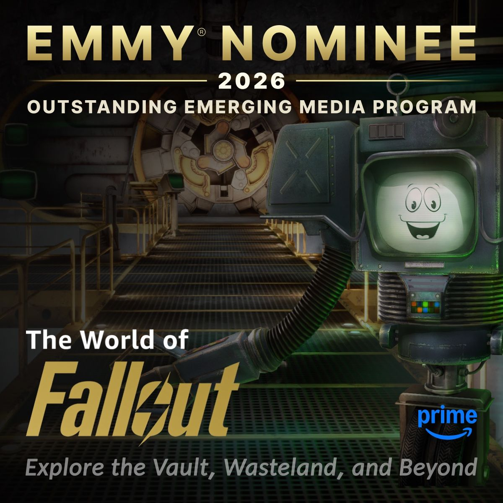
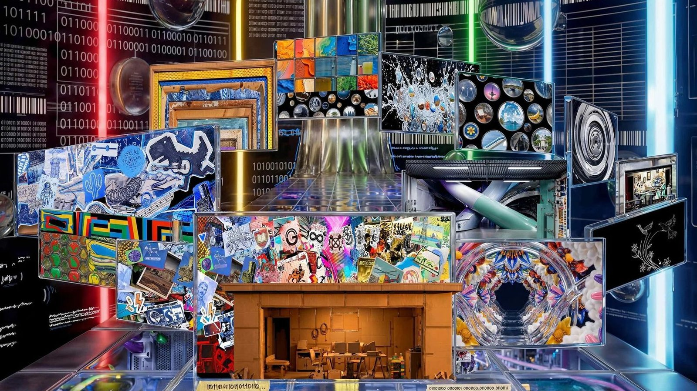
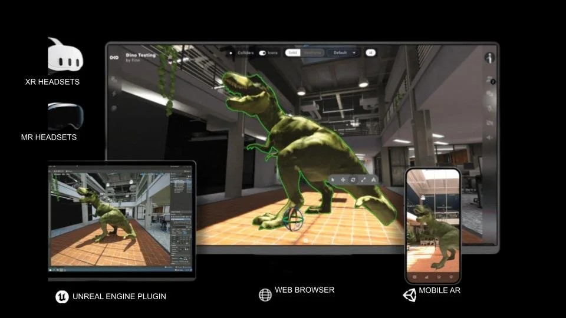
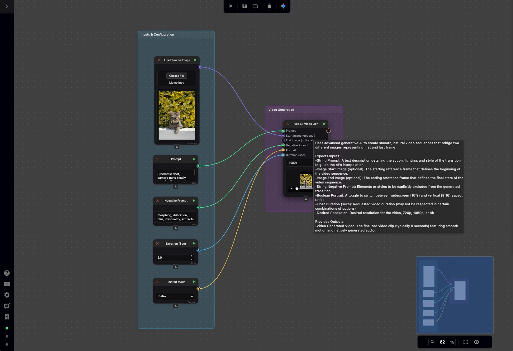
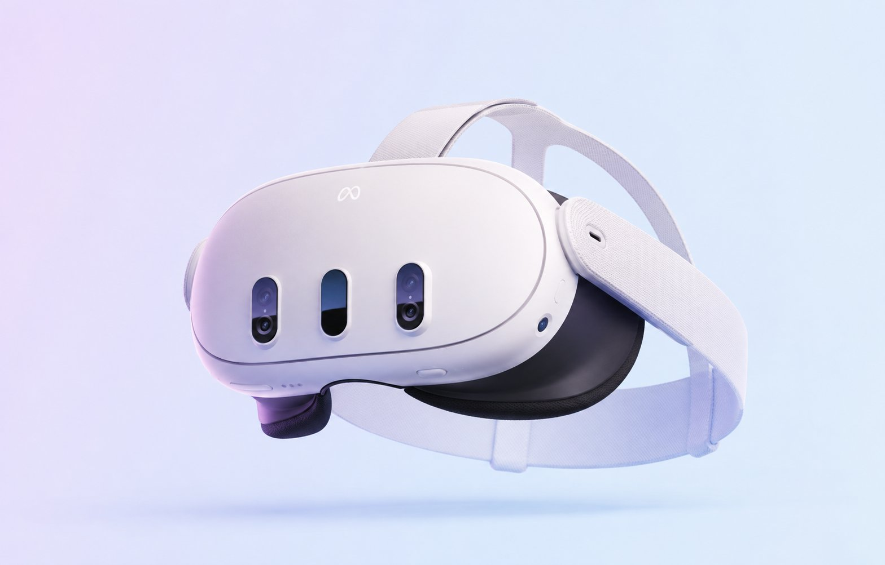

Product Manager
Melanie Zarzur
From concept to launch, I bring together engineering, creative, and product teams to build immersive experiences powered by emerging technologies. My focus is on creating products that feel intuitive, memorable, and genuinely fun to use.
Projects


Sphere · Generative AI
The Wizard of Oz at Sphere
AI Project Manager
Led a team of AI artists producing hundreds of visual elements using Google's Veo, Nano Banana, and Imagen models for The Wizard of Oz at Sphere. Managed production across the Performance, Outpainting, and Super-Resolution tracks, delivering approximately 600–800 assets per milestone that were composited into the final spherical film. Partnered closely with creative supervisors throughout the review process, translating artistic feedback into clear direction for the team while ensuring quality and milestone delivery.
Emmy Nominated 2026
The World of Fallout
Project / Production Manager
Led cross-functional development of the World of Fallout marketing experience, aligning stakeholders, creative leadership, and engineering to deliver an interactive companion experience for the Season 2 launch. Directed the optimization of Unreal Engine scenes from the virtual production stage for seamless web and mobile access, resulting in an immersive experience featuring exclusive behind-the-scenes content. The project was nominated for a 2026 Emmy Award in the Emerging Media category.


Production
Google Cloud Next '26 Music Video
Project / Production Manager
A CGI-heavy music video created for the Google Cloud Next keynote, produced in record time through a hybrid human-AI workflow powered by Nodey. Managed a team of AI artists generating shots for the music video using our internal generative AI platform. Worked closely with the editor to deliver daily animatics for creative review, ensuring the latest AI-generated content was seamlessly incorporated into each iteration while keeping production on an accelerated timeline. Read more →
TIME Best Inventions 2022
OKO & Connected Spaces Platform
Product Manager
Helped build OKO on top of Magnopus's Connected Spaces Platform, creating spatial computing experiences across Unity (AR), Unreal (VR), and web. Focused on the application layer while partnering with engineering teams to translate platform capabilities into user-facing experiences. Led the internal demo team, managing technical artists and 3D modelers to deliver immersive applications and AR-enabled tools. Used user feedback to improve navigation, usability, and workflows across training, operational, and production scenarios, helping evolve digital twin and MR technologies into scalable solutions. oko.live →


Product · Generative AI
Nodey
Product Manager
Partnered with the engineering team to build Nodey, a node-based generative AI workspace combining AI models with professional post-production tools to streamline creative workflows. The platform enabled projects such as the Google Cloud Next '26 Music Video. Served as TPM, managing day-to-day execution across Product and Engineering. Aligned priorities, roadmaps, and milestone goals while guiding the migration toward a more scalable environment. oko.live →
Product · VR
VR Marketing Experience
Product Manager
Supported the delivery of an unreleased VR experience, coordinating across animation, design, and technical art teams to align scope, timelines, and production milestones. Partnered with stakeholders to prioritize feedback, manage creative iterations, and support the successful delivery of the experience.